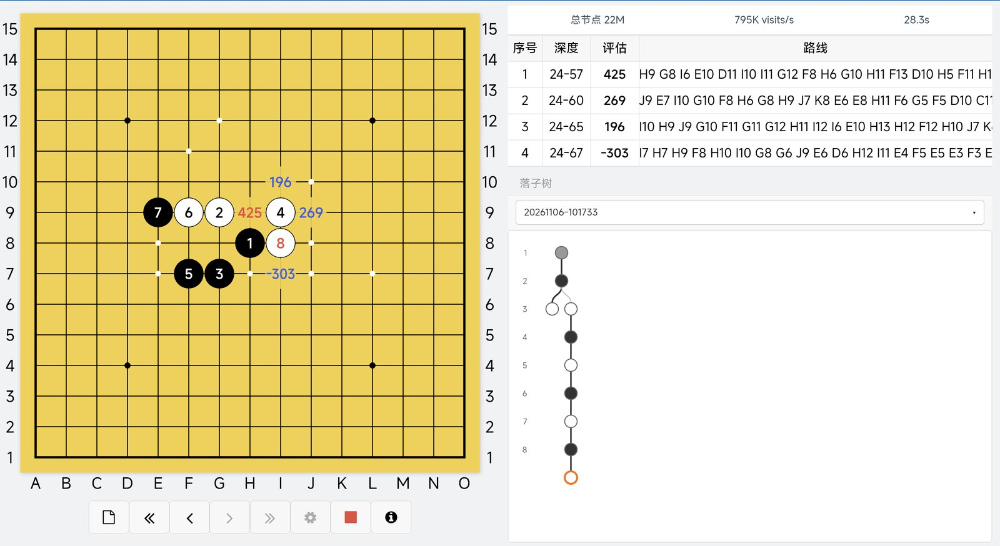
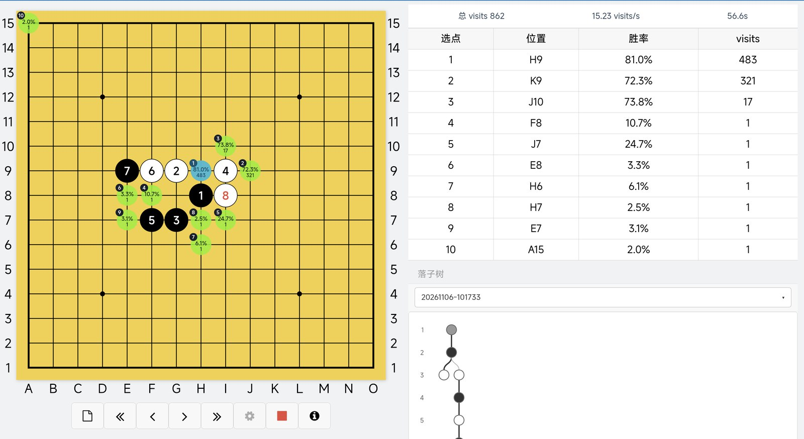
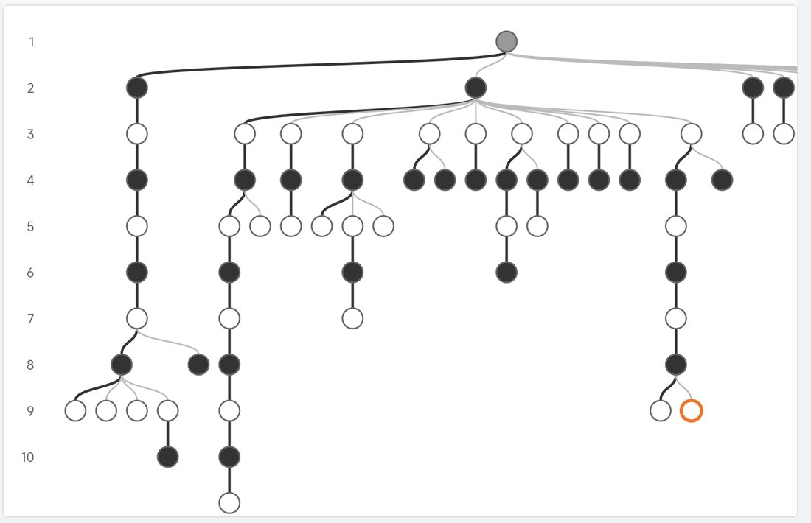
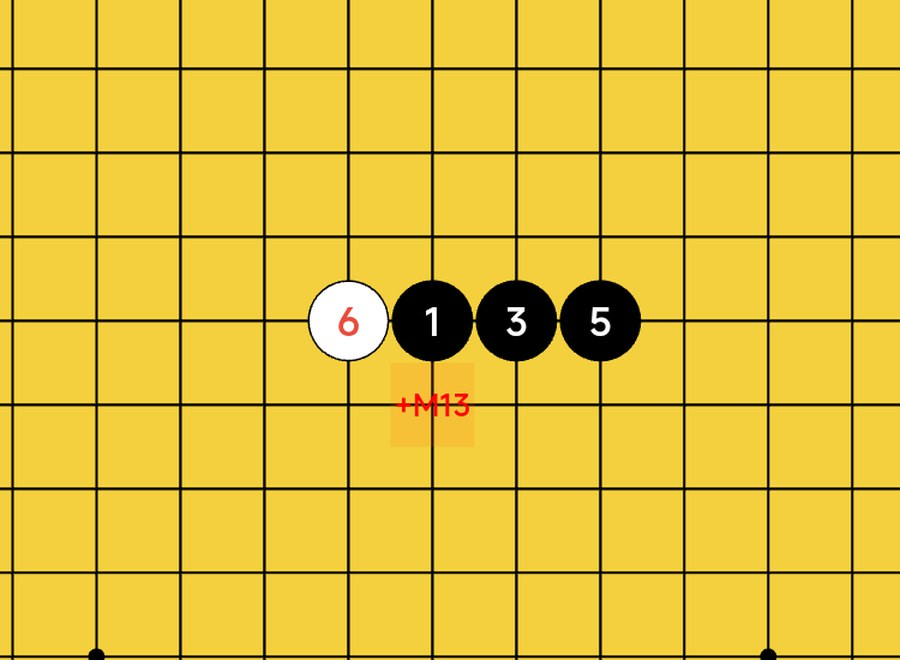
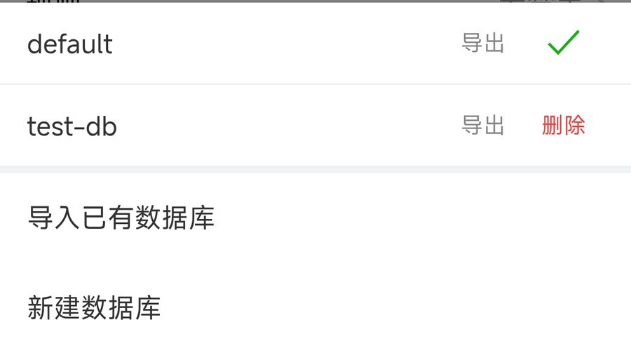
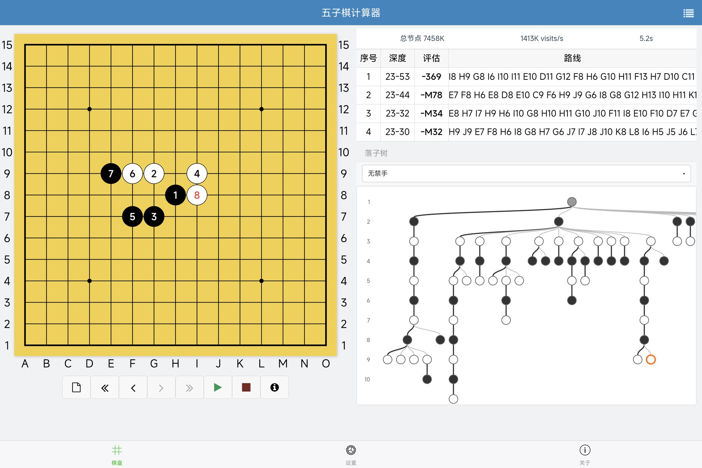
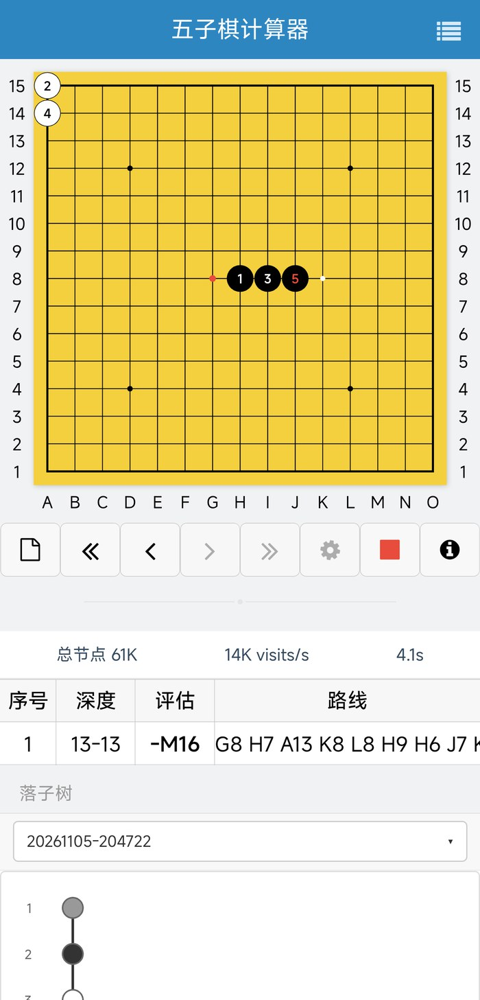
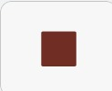
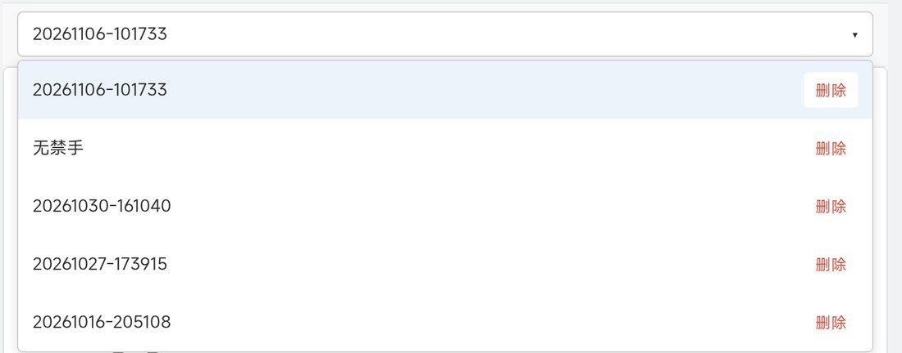
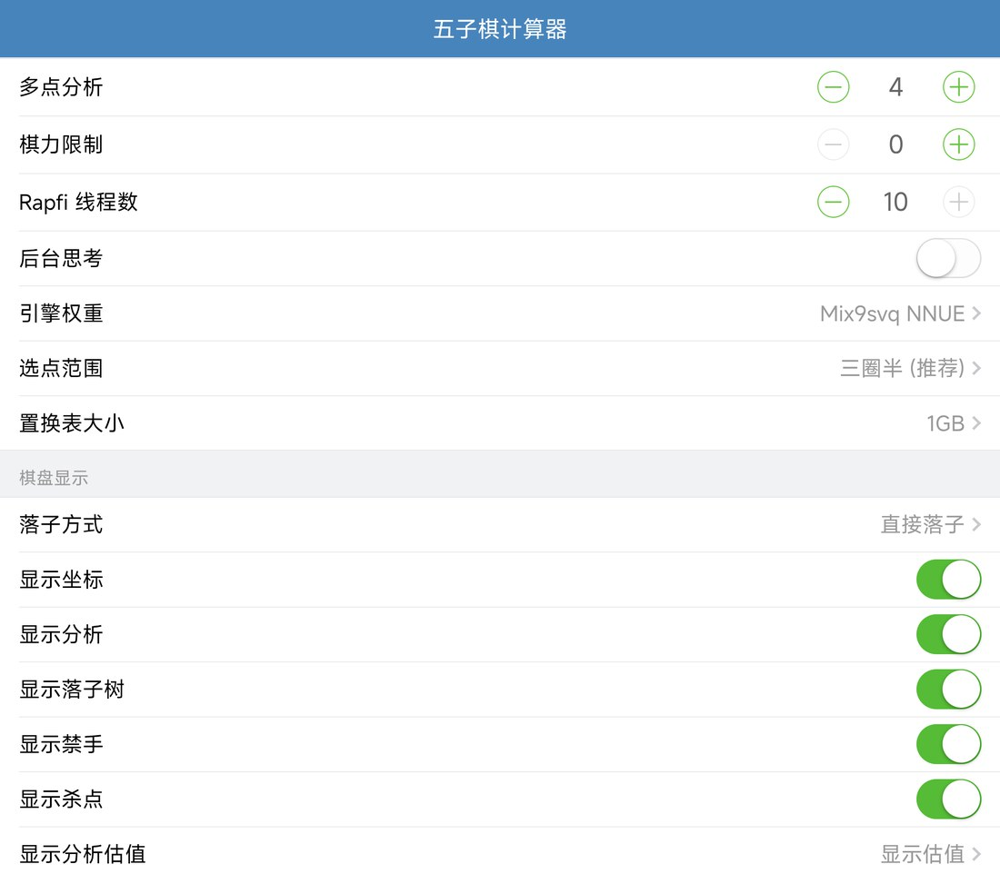

Android 手机和平板 · 本地运行
口袋里的
五子棋引擎
把 Rapfi 和 KataGo 两个强引擎装进你的设备。对局一结束就能拿出来复盘，不用联网，也不按时长付费。
在小米平板 7S Pro 上实测，其他设备的结果会不同。
同一局面，看两种答案
Rapfi 搜索快，适合追具体路线。KataGo 用神经网络，适合判断每个候选点的胜率。在设置里切换即可。


一盘棋，试多种走法
后退一手再走另一手，就多了一条分支。点落子树上的节点，棋盘立刻跳回那个局面。
- 棋谱自动保存，不怕忘记
- 保存为 SGF，只记录真实落子和分支
- 可以新建、切换、改名和删除棋谱

算过的结果，直接留在棋盘上
打开分析数据库后，Rapfi 证明出的胜负会被保存。下次遇到相同局面，+M 和 -M 会直接标在对应的空点上。
- 可以建多个数据库，按需切换
- 支持导入、导出，也能设为只读
- 记录数在分析时实时更新


手机平板，都用得顺手
可以选横屏、竖屏或自适应。平板横屏时棋盘固定在左半边，分析和落子树在右边；手机竖屏时上下排列。
- 分析和落子树可以分别隐藏
- 支持无禁手、长连不赢、有禁手、一手交换
- 也能打开 AI 执黑或执白，直接对弈


四步开始分析
不用注册，也不用配置。装好就能用。
- 1
下载安装
从发布页下载 APK，按系统提示允许安装。
- 2
摆出局面
点击棋盘交叉点落子，黑白自动交替。
- 3
开始分析
按钮变成绿色 ▶ 后点一下，结果会实时更新。
- 4
停止复盘
点红色 ■ 停止。Rapfi 会落下最佳点，不想要就点 ‹ 后退。
详细使用说明
工具栏按钮

停止计算隐藏序号后，最后一手用红点标出。
读懂 Rapfi 的分析
- 深度 24-57
- 常规搜索 24 层，最深延伸到 57 层。
- 评估 425
- 数字越大，对当前行棋方越有利。
- +M13 / -M16
- 13 手内必胜 / 16 手内必败。
- 路线
- 太长时按住左右滑动。“多点分析”决定同时显示几条。
使用 KataGo
- 切换
- 进入设置 → 思考引擎，选 KataGo，等状态变成“已连接”。首次启动要复制模型，会慢一些。
- 看圆点
- 蓝色是第一候选，绿色是其他候选。圆点内是黑方胜率和 visits，左上角是序号。
- 提速
- 在设置里点“自动测速并保存”，选出这台设备最快的配置。
规则和禁手
- 选规则
- 进入设置 → 规则，共四种。
- 看禁手
- 选“有禁手”后，轮到黑方时禁手点显示 ✕。
- 点禁手
- 会弹出提示，这一手不会落下。
分析数据库
- 打开
- 进入设置 → 分析数据库 → 使用方式，选“使用数据库”。选“只读数据库”时不写入新记录。
- 管理
- 点“当前数据库”可以切换、新建、导入、导出和删除，长按名称可以改名。
- 杀点
- 分析停止后显示。红色 +M 表示走这里能赢，蓝色 -M 表示走这里会输。
管理棋谱和落子树

- 切换
- 点落子树上方的下拉框。
- 改名和删除
- 长按棋谱名改名，点“删除”删除。
- 删分支
- 双击落子树的节点，可以删除它和后面的分支。
显示和布局设置

- 布局方式
- 横屏和竖屏会锁定屏幕方向，自适应跟随设备旋转。
- 显示开关
- 坐标、分析、落子树、禁手、杀点都可以单独关闭。
- 性能参数
- 线程数和置换表可以按设备调整，占用过高时调小。
在设备上跑，也够快
测试设备是小米平板 7S Pro（玄戒 O1，16 GB），Release 1.1.0。
Rapfi 开局 节点/秒
8 子中局约 96 万。10 线程，多点分析 4，1 GB 置换表。
Rapfi 到达深度 12
实测 140–365 毫秒。
KataGo visits/秒
Mali-G925 GPU，三个全新局面的平均值。
常见问题
分析要联网吗？
不需要。两个引擎和权重都在安装包里，断网也能分析。
按停止后，棋盘上多了一颗棋？
这是 Rapfi 的行为：停止时落下当前最佳点，点 ‹ 后退可以撤回。KataGo 不会自动落子。
空棋盘点计算，为什么马上走了天元？
Rapfi 在空棋盘上不进入搜索，直接走 H8。落下第一手后再计算即可。
支持什么设备？
Android 7.0 及以上的 64 位设备，安装包约 300 MB。
内存占用很高怎么办？
Rapfi 的占用主要来自置换表，到设置里调小。KataGo 进程约占 2.3 GB，内存较小的设备建议用 Rapfi。
下载五子棋计算器
GitHub 发布页
在 Assets 里下载 Gomoku-Calc-v1.0.apk（303 MB）。
前往 GitHub → 国内访问Gitee 发布页
附件只有源码，APK 通过页面内的网盘链接下载。
前往 Gitee →当前发布版是 v1.0.0（2026 年 10 月 27 日）
本页介绍的是最新代码。下面这些功能在发布后才加入，要等下一个版本：布局方式和显示落子树开关、棋盘上的数据库杀点标注、数据库改名和记录数实时刷新、路线单行滑动。